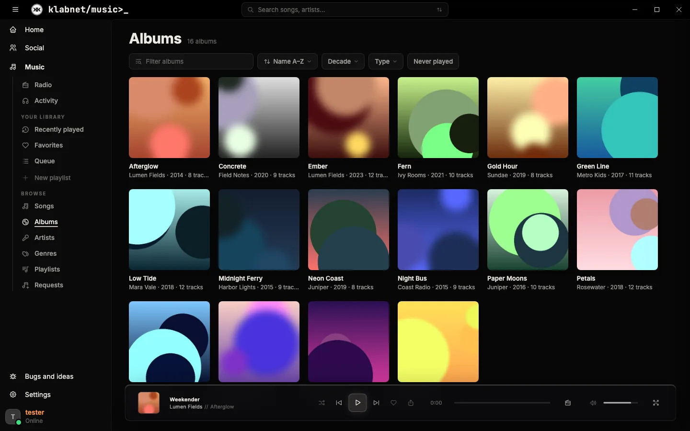
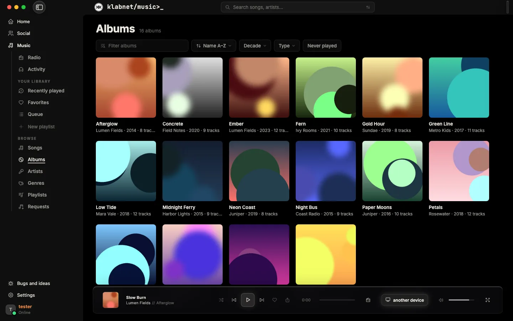

klabnet in its own window, for Windows, macOS and Linux. It's the same klabnet as the site, and it keeps playing your music when you close the window.
curl -fsSL https://git.klab.gg/xvoltzz/klabnet-desktop/raw/branch/main/get.sh | sh

Installs for you alone, no admin needed, and updates itself. How to install
Or install it with one line in Terminal, no security prompt. How to install
Or one line in a terminal picks the right one for your distro, Arch included. How to install
From download to signed in.
klabnet-setup.exe, for Windows 10 and 11 (64-bit).
If Windows says Windows protected your PC
, press More info, then Run anyway. klabnet installs for you alone (no admin needed), opens, and stays in the Start menu.
Press Sign in with browser. Your browser opens klab.gg's sign-in, with your passkeys and password manager, and klabnet carries on once you're in.
By itself: it downloads the next version in the background and installs it when klabnet restarts.
Settings → Apps → Installed apps → klabnet → Uninstall.
Open Terminal and paste this. It installs the build for your Mac into Applications and opens it, with no security prompt.
curl -fsSL https://git.klab.gg/xvoltzz/klabnet-desktop/raw/branch/main/get.sh | shApple silicon or Intel. Not sure? Apple menu → About This Mac: Chip Apple M…
is Apple silicon, Processor … Intel
is Intel.
Open the .dmg and drag klabnet onto the Applications folder beside it.
klabnet isn't signed by Apple yet, so macOS stops it once. Open System Settings → Privacy & Security, scroll down and press Open Anyway beside klabnet. (On macOS 14 and earlier: right-click klabnet in Applications and pick Open.)
Press Sign in with browser, sign in to klab.gg there, and you're in.
Not by itself yet. Run the line above again, or download it again here.
Drag klabnet from Applications to the Bin, or:
curl -fsSL https://git.klab.gg/xvoltzz/klabnet-desktop/raw/branch/main/get.sh | sh -s -- --uninstallPaste this in a terminal. It picks the right package for your distro (.deb on Debian and Ubuntu, .rpm on Fedora and openSUSE, a build on Arch, the AppImage anywhere else), asks for your password to install it, and puts klabnet in your apps.
curl -fsSL https://git.klab.gg/xvoltzz/klabnet-desktop/raw/branch/main/get.sh | shDownload klabnet.deb, then:
sudo apt install ./klabnet.debDownload klabnet.rpm, then:
sudo dnf install ./klabnet.rpmopenSUSE: sudo zypper install --allow-unsigned-rpm ./klabnet.rpm
Built on Arch's own Electron, as a pacman package:
git clone https://git.klab.gg/xvoltzz/klabnet-desktop && cd klabnet-desktop && ./install.shDownload klabnet.AppImage; it runs anywhere and updates itself.
chmod +x klabnet.AppImage && ./klabnet.AppImageIf it won't start, install FUSE 2 (libfuse2; libfuse2t64 on Ubuntu 24.04).
Press Sign in with browser. Staying signed in needs a keyring (GNOME Keyring, KWallet or KeePassXC), which most desktops have.
On GNOME, the tray icon needs the AppIndicator extension. Plasma and Hyprland's bars have it already.
The AppImage updates itself. A package: run the quick line again, or install the new one the same way.
curl -fsSL https://git.klab.gg/xvoltzz/klabnet-desktop/raw/branch/main/get.sh | sh -s -- --uninstall